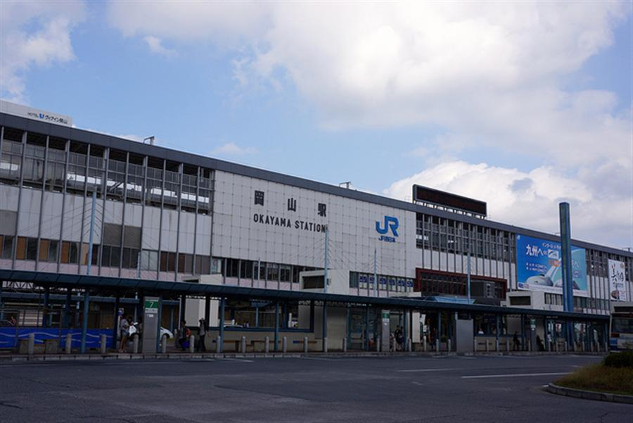
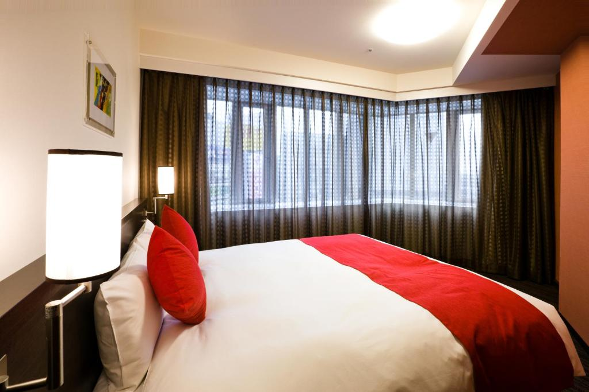
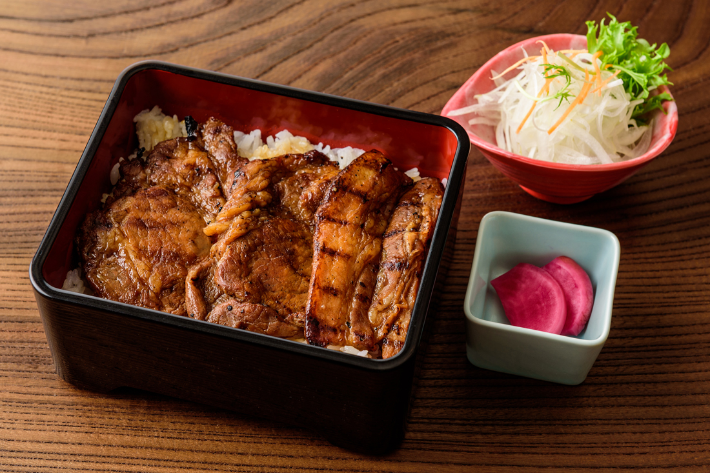
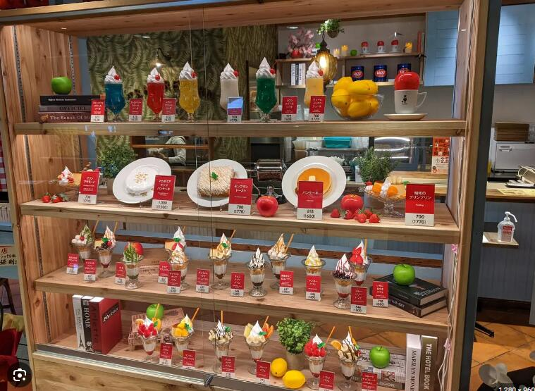
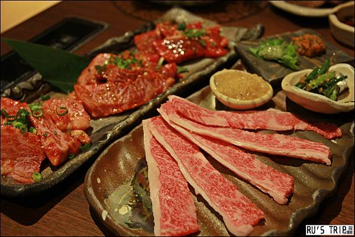
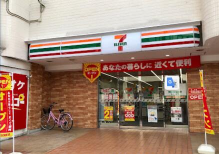
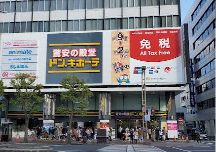

14：35 岡山機場
預估停留：60分鐘機場2號乘車處搭接駁車到岡山，預估30分鐘抵達，有機率加開班次，可刷西瓜卡。
有時間可以看看伴手禮區有沒有蒜山巧克力、麝香葡萄飲。

16：50 岡山站前大和ROYNET飯店
預估停留：20分鐘已付款，最晚退房時間11點
位置：岡山站的西出口
有自動售販賣機、製冰機、微波爐、變壓器
提供日本國內的快遞服務
深夜12點～早上6點，酒店正門都會上鎖


デザートパーラー ピノキオ イオンモール岡山店
舒芙蕾／水果冰淇淋杯

肉匠松屋
牛舌燒肉，或是隨便挑一間進去吃，google位置圖有樓層介紹

7-Eleven セブン-イレブン 岡山錦町店
預估停留：20分鐘冰沙，限定店鋪販售，找看看有無IG上的那個冰淇淋。買明天早餐。

驚安の殿堂 唐吉訶德 岡山站前店
預估停留：45分鐘唐吉訶德購物清單
要帶電子折價券（滿10000日幣可折5%），要退稅，留一罐胃藥。
後面行程沒有太多餘裕能買伴手禮，這裡先買，之後會安排其他天補漏。